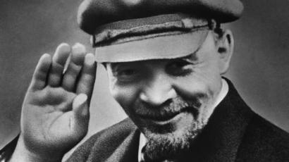

Возможные факультеты:
Важно заметить, что в этом райском университете также существуют факультеты нанотехнологий и эффективная система подготовки к ICPC. Что, безусловно, минус, ведь спортивное программирование удел плебса.
НИТУ «МИСиС» ведет образовательную деятельность по 135 направлениям подготовки для бакалавриата, специалитета, магистратуры и в рамках дополнительного обучения. 13 программ бакалавриата и 6 программ магистратуры имеют европейский знак качества EUR-ACE®. Университет предлагает 10 англоязычных программ магистратуры, две из них имеют международную аккредитацию в ASIIN: Multicomponent nanostructured coatings, Nanofilms и Quantum physics for advanced materials engineering. Для иностранцев открыто подготовительное отделение с обучением на русском языке. Подготовка осуществляется по дополнительным общеобразовательным программам инженерно-технической и технологической и экономической направленности.
Большинство источников безумно предвзяты и считают данный вуз великолепным, гениальным, вряд ли можно найти какую-нибудь критику. Честный и непредвзятый анализ можно просмотреть на соответствующей вкладке. Здесь учился Егор Крид.
Возможные факультеты:
Довольно постироничен тот факт, что на все факультеты, содержащие подстрокой слово "информатика", нужно сдавать физику. А на математику, наоборот, только информатику.
Отношение к данному вузу в большинстве источников скептично. Но мы уверяем вас: практически никто не учился в данном вузе и их мнение не является объективным. Наш специальный эксперт внесёт ясность в вопрос и не заставит вас скучать. После исследования нашего сайта вы с вероятностью близкой к 100% сделаете правильный выбор. Здесь учился Егор Крид.

Студия дизайна Артема Лебедя: Есипов Иван(@estacada), Антрушин Евгений(@piezzacondoleezza), Степкин Степан(@sorrynoclip). 2020.
Любые совпадения случайны, авторы никого не стремятся обидеть. Все персонажи вымышлены. Любая нецензурщина пресечена.